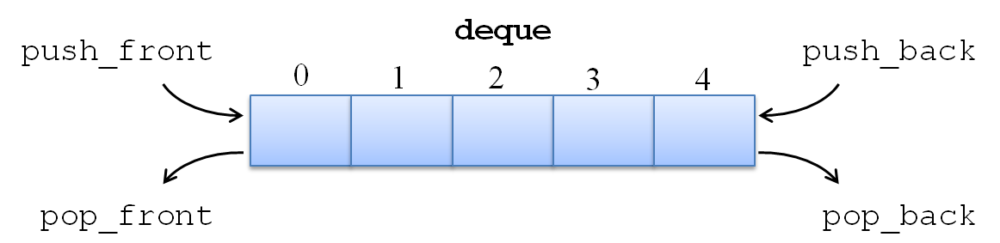

Listas com Restrições: Deque
- Acrônimo para Double-ended queue
- Flexibiliza as restrições de filas e pilhas, fazendo com que seja possível inserir e remover em ambas as extremidades da sequência 
TAD Pilha
Dados:
data: Lista
size: inteiro
Operações:
create(): Pilha
push (dado)
pop(): dado
top(): dado push(dado)
insere dado no topo da pilha
aponta a cabeça da pilha para o no dado
incrementa tamanho da pilhapop(): dado
armazena o dado no topo da pilha em 'aux'
remove topo da pilha
decrementa tamanho da pilha
retorna o valor armazenado em 'aux'top(): dado
retorna o valor do topo da pilha| Pilhas | Sequencial | Encadeada |
|---|---|---|
| Empilhar (push) | \(O(1)\) | \(O(1)\) |
| Desempilhar (pop) | \(O(1)\) | \(O(1)\) |
| Mostrar topo (top) | \(O(1)\) | \(O(1)\) |
/* operações sobre uma pilha (stack) */
Stack* createStack();
int push (Stack *stack, int data);
int pop (Stack *stack, int *data);
int top (Stack *stack, int *data);#define STACK_MAXSIZE 20
typedef struct {
int data[STACK_MAXSIZE]; /* dados */
int size; /* serve também como ref p/ topo */
} Stack;
/* insere um elemento no topo da pilha */
int push (Stack *stack, int data) {
if (stack -> size < STACK_MAXSIZE) {
stack -> data [ stack -> size ] = data;
stack -> size++;
return 1;
}
return 0;
}/* remove e retorna o elemento do topo da pilha */
int pop (Stack *stack, int *data) {
if (stack -> size > 0) {
stack -> size--;
*data = stack -> data [ stack -> size ];
return 1;
}
return 0;
}/* retorna o elemento do topo da pilha */
int top (Stack *stack, int *data) {
if (stack -> size > 0) {
*data = stack -> data [ stack -> size - 1 ];
return 1;
}
return 0;
}typedef struct node {
int data;
struct node *next;
} Node;
typedef struct {
Node *head; /* nó-cabeça */
int size; /* opcional */
} Stack;
/* insere um elemento no topo da pilha */
int push (Stack *stack, int data) {
Node *new_head = (Node*) malloc(sizeof(Node));
if (new_head) {
new_head -> data = data;
new_head -> next = stack -> head;
stack -> head = new_head;
stack -> size++;
return 1;
}
return 0;
}/* remove e retorna o elemento do topo da pilha */
int pop (Stack *stack, int *data) {
if (stack -> head) {
Node *old_head = stack -> head;
stack -> head = old_head -> next;
*data = old_head -> data;
free(old_head);
return 1;
}
return 0;
}/* retorna o elemento do topo da pilha */
int top (Stack *stack, int *data) {
if (stack->head) {
*data = stack -> head -> data;
return 1;
}
return 0;
}TAD Fila
Dados:
data: Lista
size: inteiro
Operações:
create(): Fila
enqueue (dado)
dequeue(): dado
front(): dado enqueue(dado)
insere dado no final da fila
ajusta referência do final da fila para o dado inserido
incrementa tamanho da filadequeue(): dado
armazena o dado no início da fila em 'aux'
retira o elemento do início da fila
decrementa tamanho da fila
retorna o valor armazenado em 'aux'front(): dado
retorna o valor do início da fila| Filas | Sequencial | Encadeada |
|---|---|---|
| Enfileirar (queue) | \(O(1)\) | \(O(1)\) |
| Desenfileirar (dequeue) | \(O(1)\) | \(O(1)\) |
| Mostrar o da frente (front) | \(O(1)\) | \(O(1)\) |
/* operações sobre uma fila (queue) */
Queue* createQueue();
int enqueue (Queue *queue, int data);
int dequeue (Queue *queue, int *data);
int front (Queue *queue, int *data);/* operações sobre um deque */
Deque* createDeque();
int push_front (Deque *deque, int data);
int pop_front (Deque *deque, int *data);
int push_back (Deque *deque, int data);
int pop_back (Deque *deque, int *data);
int front (Deque *deque, int *data);
int back (Deque *deque, int *data);Vector, com as operações similares ao de um arranjo (acesso direto a um elemento a partir de um índice). Esse novo tipo deve alocar por default 10 espaços para seus dados, mas dobrar de tamanho sempre que uma operação de inserção for gerar um overflow.